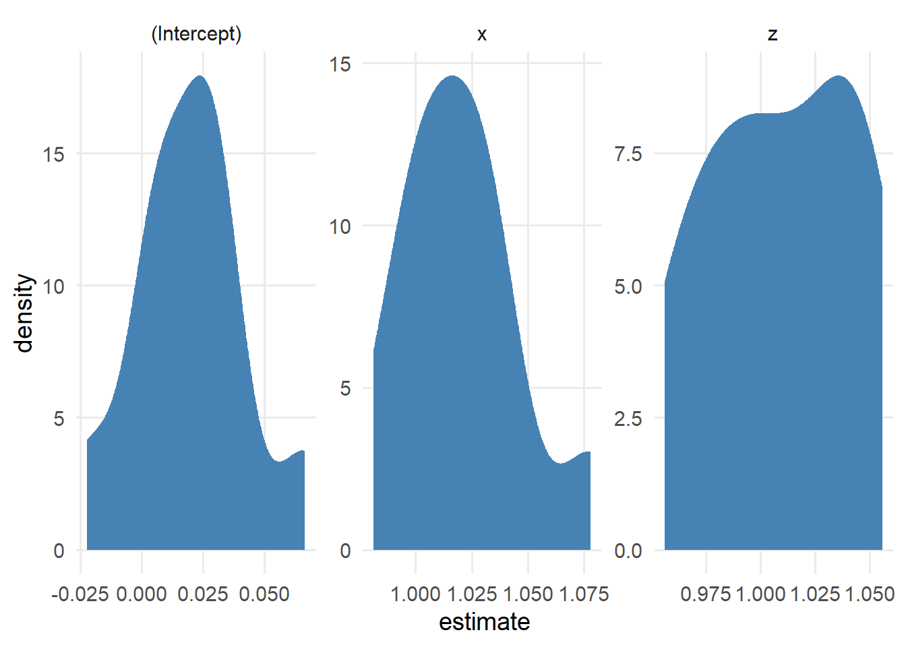
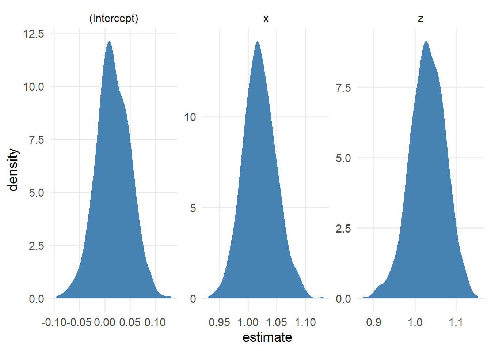
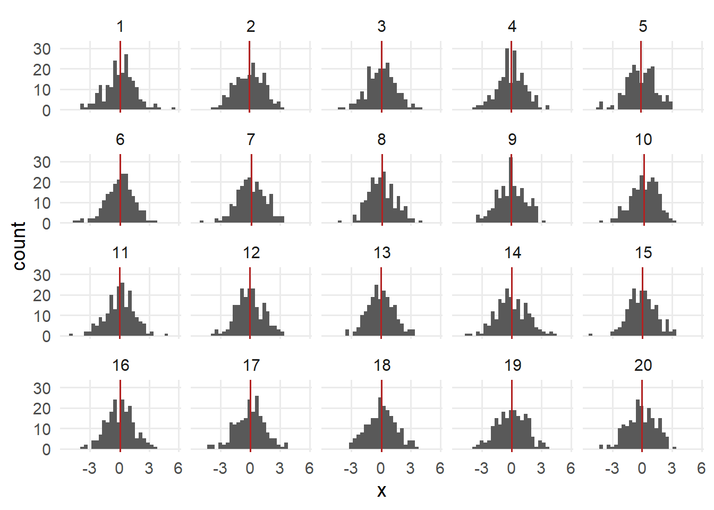
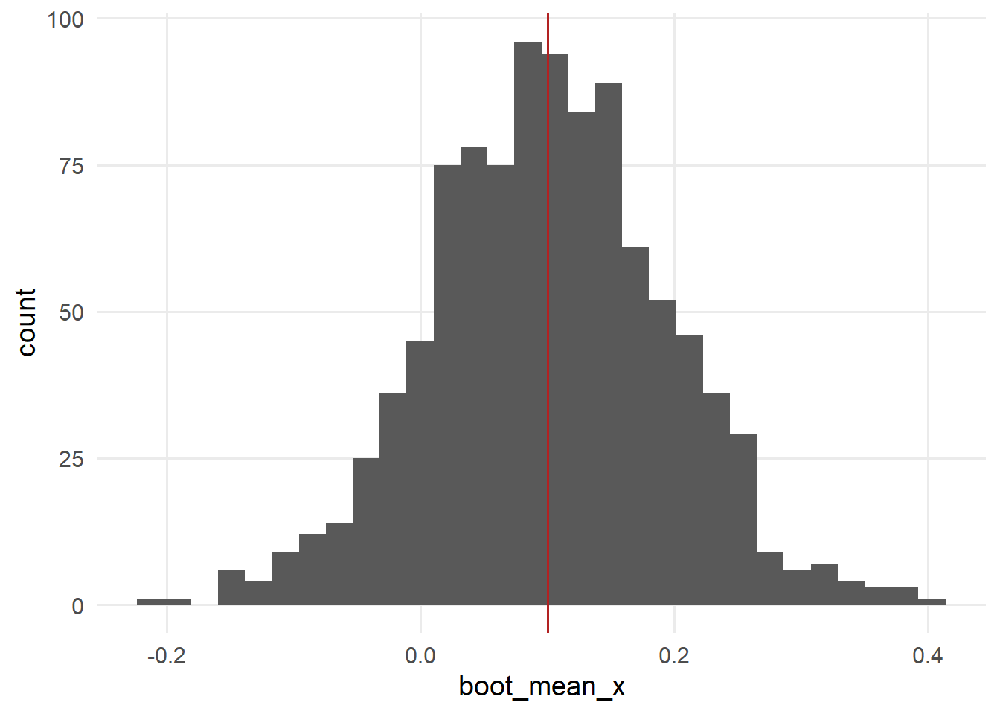
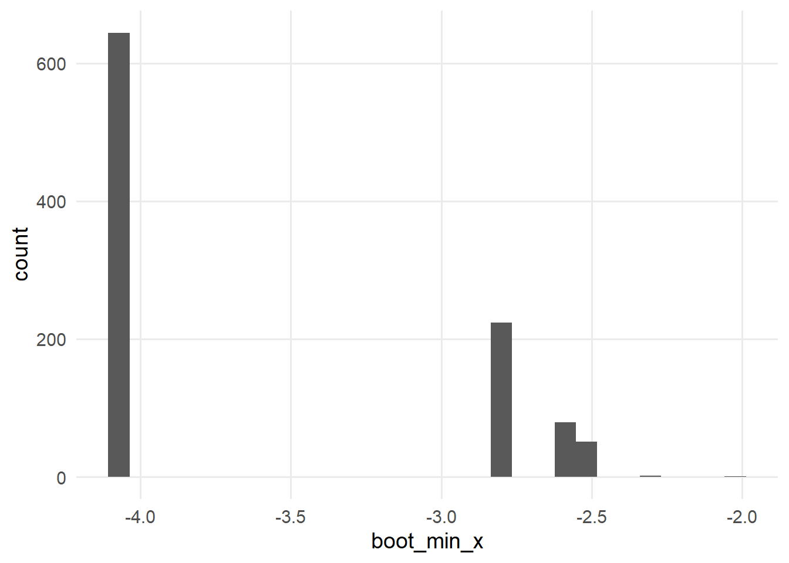

注记Work-in-progress 🚧
You are reading the work-in-progress first edition of Causal Inference in R. This chapter has its foundations written but is still undergoing changes.
The Bootstrap · 原书附录中译
来源：Malcolm Barrett、Lucy D’Agostino McGowan、Travis Gerke，Causal Inference in R · The Bootstrap。 本页为中文翻译；原书代码块、公式、图表交叉引用和引用键均按原文保留。统计图在网页渲染时由 R 代码生成，静态插图直接引用原文件。 原书仓库采用 CC BY-NC-SA 4.0；代码采用 MIT 许可。请遵守原许可证并注明作者。
You are reading the work-in-progress first edition of Causal Inference in R. This chapter has its foundations written but is still undergoing changes.
自助法是一种简单而灵活的算法，通过有放回重采样来计算统计量。 当不存在计算某个量的闭式解时（因果推断中常见，尤其是在计算标准误时），或者我们怀疑参数方法所使用的假设不适用于某种情形时，这种方法非常有用。
在 R 中，自助法长期以来一直通过编写函数来计算感兴趣的统计量，最早可以追溯到经典的 boot 包。 本书将使用 rsample，这是一种更现代的重采样工具；但通常我们仍从编写一个用于计算目标估计量的函数开始。
假设我们想对 this_data 计算 some_statistic()。 要对 R 个重采样进行自助法，我们需要：
对this_data 进行有放回重采样。 在一次给定的自助法重采样中，同一行可能出现多次（也可能一次都不出现），从而模拟底层总体中的抽样过程。
indices <- sample(
# create a vector of indices:
# 1 through the number of rows
seq_len(nrow(this_data)),
# sample a vector indices
# that's the same length as `this_data`
size = nrow(this_data),
replace = TRUE
)
bootstrap_resample <- this_data[indices, ]在 bootstrap_resample 上拟合 some_statistic()
estimate <- some_statistic(bootstrap_resample)重复 R 次
随后我们会得到 estimates 的分布，据此可以计算总体统计量，例如点估计、标准误和置信区间。
rsample 是 tidymodels 框架中的一个重采样包，但也适用于 tidymodels 之外的问题。 它比 boot 包有少许额外开销，但因此也更加灵活。
假设我们有一份包含三个变量 x、z 和 y 的抽样数据，想要计算线性回归中 x 和 z 的系数的置信区间，结局变量为 y。 我们可以使用自助法计算这些置信区间（此外，R 还提供了闭式解）。
library(tidyverse)
library(rsample)
set.seed(1)
n <- 1000
sampled_data <- tibble(
z = rnorm(n),
x = z + rnorm(n),
y = x + z + rnorm(n)
)
lm(y ~ x + z, data = sampled_data)
Call:
lm(formula = y ~ x + z, data = sampled_data)
Coefficients:
(Intercept) x z
0.0162 1.0220 1.0270 首先，我们使用 bootstraps() 函数创建一个嵌套数据集，其中每个重采样数据集都存储为 rsplit 对象。
bootstrapped_resamples <- bootstraps(sampled_data, times = 10)
bootstrapped_resamples$splits[[1]]<Analysis/Assess/Total>
<1000/373/1000>这里，第一个自助法数据集包含原始行中的 627 行，另有 373 行未被纳入。 如果查看生成的数据框，会看到 1000 行，与原始数据集中的行数相同。 这意味着某些纳入的行会出现不止一次；每一行都是有放回抽取的。 这一比例接近我们的平均预期：每个自助法数据集最终包含原始数据集约三分之二的内容。
boot_resample <- bootstrapped_resamples$splits[[1]] |>
as.data.frame()
boot_resample# A tibble: 1,000 x 3
z x y
<dbl> <dbl> <dbl>
1 0.244 0.742 0.194
2 0.984 0.971 2.84
3 -1.59 -2.33 -3.66
4 -0.0109 -1.47 -0.885
5 0.391 0.373 2.99
6 -0.737 -2.64 -3.34
7 0.992 1.53 1.92
8 0.525 -1.12 -3.17
9 0.0773 0.927 -0.801
10 -1.28 -1.84 -4.69
# i 990 more rows正如 概述 中的算法所述，我们会在每个自助法数据集上拟合模型。
lm(y ~ x + z, data = boot_resample)
Call:
lm(formula = y ~ x + z, data = boot_resample)
Coefficients:
(Intercept) x z
0.0245 0.9812 1.0559 我们将其表示为一个函数。
fit_lm <- function(.split) {
.df <- as.data.frame(.split)
lm(y ~ x + z, data = .df)
}
bootstrapped_resamples$splits[[1]] |>
fit_lm()
Call:
lm(formula = y ~ x + z, data = .df)
Coefficients:
(Intercept) x z
0.0245 0.9812 1.0559 我们不会逐个处理，而是使用迭代在每个重采样数据集上运行回归。 bootstrapped_resamples$splits 是一个列表，因此可以用 map() 遍历它并得到一个列表。 bootstrapped_resamples$splits 具体来说是一个列表列，即数据框中的一列，而这一列本身是一个列表。 我们将利用 bootstrapped_resamples 中已有的结构，把结果存储为另一个列表列。
bootstrapped_resamples <- bootstrapped_resamples |>
mutate(lm_results = map(splits, fit_lm))现在，lm_results 的每个元素都是一个 lm 对象——即对自助法重采样数据集拟合得到的回归模型。 下面是最后一次重采样得到的模型。
bootstrapped_resamples$lm_results[[10]]
Call:
lm(formula = y ~ x + z, data = .df)
Coefficients:
(Intercept) x z
0.0341 1.0381 1.0005 现在，我们拥有模型中三个系数（截距、x 和 z）各自的 10 个估计值。 图 80.1 展示了它们的分布。
library(broom)
bootstrapped_resamples <- bootstrapped_resamples |>
mutate(tidy_results = map(lm_results, tidy))
unnested_results <- bootstrapped_resamples |>
select(id, tidy_results) |>
unnest(tidy_results)
unnested_results# A tibble: 30 x 6
id term estimate std.error statistic p.value
<chr> <chr> <dbl> <dbl> <dbl> <dbl>
1 Bootst~ (Int~ 0.0245 0.0321 0.762 4.46e- 1
2 Bootst~ x 0.981 0.0313 31.4 6.66e-151
3 Bootst~ z 1.06 0.0443 23.8 1.15e- 99
4 Bootst~ (Int~ 0.0275 0.0329 0.834 4.04e- 1
5 Bootst~ x 1.04 0.0311 33.3 4.86e-164
6 Bootst~ z 0.997 0.0448 22.3 2.03e- 89
7 Bootst~ (Int~ 0.00339 0.0340 0.0997 9.21e- 1
8 Bootst~ x 1.08 0.0318 33.9 5.10e-168
9 Bootst~ z 0.968 0.0466 20.8 5.88e- 80
10 Bootst~ (Int~ 0.00546 0.0321 0.170 8.65e- 1
# i 20 more rowsunnested_results |>
ggplot(aes(estimate)) +
geom_density(fill = "steelblue", color = NA) +
facet_wrap(~term, scales = "free")
lm(y ~ x + z, data = .df). The distributions were calculated with 10 bootstrapped resamples.
重采样次数越多，估计值的分布越平滑。 这里是 1000 次的结果（图 80.2）。
bootstrapped_resamples_1k <- bootstraps(
sampled_data,
times = 1000
) |>
mutate(
lm_results = map(splits, fit_lm),
tidy_results = map(lm_results, tidy)
)
bootstrapped_resamples_1k |>
select(id, tidy_results) |>
unnest(tidy_results) |>
ggplot(aes(estimate)) +
geom_density(fill = "steelblue", color = NA) +
facet_wrap(~term, scales = "free")
lm(y ~ x + z, data = .df). The distributions were calculated with 1000 bootstrapped resamples.
我们可以使用 rsample 中的置信区间函数来计算这些系数分布的信息；这些函数遵循 int_*(nested_results, list_column_name) 的模式。 rsample 要求结果必须是 broom::tidy() 的结果，或者是包含类似列的数据框。
让我们使用 int_pctl() 获取简单的基于百分位数的置信区间。 它们将得到第 2.5% 和第 97.5% 分位数。
int_pctl(bootstrapped_resamples_1k, tidy_results)# A tibble: 3 x 6
term .lower .estimate .upper .alpha .method
<chr> <dbl> <dbl> <dbl> <dbl> <chr>
1 (Intercept) -0.0511 0.0164 0.0824 0.05 percenti~
2 x 0.965 1.02 1.08 0.05 percenti~
3 z 0.941 1.03 1.11 0.05 percenti~现在，我们得到一个数据框，其中包含每个估计值及其自助法置信区间。 自助法的非凡之处在于，这一套方法可以应用于极其广泛的统计问题，包括那些原本无法求解的问题。
为什么这个极其简单的算法能在如此多的问题上表现良好？ 关于自助法的技术细节，请参阅其原始论文和著作 (Efron 1979; Efron 和 Tibshirani 1993)。 但让我们先对其运作方式建立一些直觉。
考虑一个我们想要了解的总体。 有时我们拥有总体中每个观测的资料，但更多时候，我们需要出于必要性或效率考虑从总体中抽样。
library(tidyverse)
n <- 1000000
population <- tibble(
z = rnorm(n),
x = z + rnorm(n),
y = x + z + rnorm(n)
)population 包含 100 万个观测，但我们将从整个总体中随机抽取 200 个观测。 如果还需要进行更多次抽样，我们会独立于原始样本进行。 某个观测可能最终出现在不止一项研究中。 假设已经从同一总体中完成了 20 项这样的研究。
samples <- map(1:20, ~ population[sample(n, size = 200), ]) |>
bind_rows(.id = "sample") |>
mutate(sample = as.numeric(sample))由于随机抽样变异，每个样本的 x 均值都略有不同于 population 中的均值，后者为 -6.8199^{-4}。 这些样本估计值都在总体估计值附近波动（图 80.3）。
sample_means <- samples |>
group_by(sample) |>
summarize(across(everything(), mean))
samples |>
ggplot(aes(x = x)) +
geom_histogram() +
geom_vline(
data = sample_means,
aes(xintercept = x),
color = "firebrick"
) +
facet_wrap(~sample)
x for twenty samples. Each sample is sampled from population and has a sample size of 200.
你可能会注意到，从总体中抽样与我们在自助法中进行的抽样有相似之处。 我们把重采样视为其来源总体的代表。 这有助于我们将所看到的分布转换为原始总体的尺度，方式与使用参数置信区间时大致相同。 与从总体中抽样的一个关键区别是，自助法确定的是围绕样本估计值的离散程度，而不是围绕总体估计值的离散程度。 让我们更仔细地看看样本 8。
sample_8 <- samples |>
filter(sample == "8")
sample_8 |>
summarize(across(everything(), mean))# A tibble: 1 x 4
sample z x y
<dbl> <dbl> <dbl> <dbl>
1 8 -0.0406 0.100 0.0476样本均值 x 为 0.1。 现在，让我们对这个样本进行自助法重采样，并计算每个自助法重采样中 x 的均值。 图 80.4 中的自助法估计值分布以样本均值为中心，呈对称形状。
calculate_mean <- function(.split, what = "x", ...) {
.df <- as.data.frame(.split)
t <- t.test(.df[[what]])
tibble(
term = paste("mean of", what),
estimate = as.numeric(t$estimate),
std.error = t$stderr
)
}
s8_boots <- bootstraps(sample_8, times = 1000, apparent = TRUE)
s8_boots <- s8_boots |>
mutate(boot_mean_x = map(splits, calculate_mean))
s8_boots |>
mutate(boot_mean_x = map_dbl(boot_mean_x, \(.df) .df$estimate)) |>
ggplot(aes(x = boot_mean_x)) +
geom_histogram() +
geom_vline(
data = sample_means |> filter(sample == "8"),
aes(xintercept = x),
color = "firebrick"
)
尽管估计值的分布围绕样本均值，但自助法通过模拟从总体中抽样的过程，为置信区间赋予了总体层面的解释。 置信区间是一个频率学派概念，与从同一总体进行多次抽样有关。 对于 95% 置信区间，由样本估计出的置信区间中有 95% 会包含真实的总体估计值。 当这一点成立时（例如，从总体抽取样本的 100 项研究中，有 95 项计算出的置信区间包含总体估计值），我们称这些置信区间具有名义覆盖率。
例如，让我们计算包含总体 x 均值的置信区间所占的比例。 我们还会增加重采样次数，以更好地近似覆盖率。 （样本数量增加得越多，结果就越接近 95%。）
n_samples <- 1000
samples <- map(seq_len(n_samples), ~ population[sample(n, size = 200), ]) |>
bind_rows(.id = "sample") |>
mutate(sample = as.numeric(sample))
cis <- samples |>
group_by(sample) |>
group_modify(~ t.test(.x$x) |> tidy())
between(
rep(mean(population$x), n_samples),
cis$conf.low,
cis$conf.high
) |>
mean()[1] 0.959在许多情形下，自助法能让我们获得具有名义覆盖率的置信区间，就像上面定义明确的参数方法一样。 我们不运行这段代码，因为它需要进行 r_bootstraps * n_samples 次计算，但结果会很相似。
bootstrap_ci <- function(.sample_df, ...) {
sample_boots <- bootstraps(.sample_df, times = 1000)
sample_boots <- sample_boots |>
mutate(boot_mean_x = future_map(splits, calculate_mean))
sample_boots |>
int_pctl(boot_mean_x)
}
boot_cis <- samples |>
group_by(sample) |>
group_modify(bootstrap_ci)
coverage <- between(
rep(mean(population$x), n_samples),
boot_cis$.lower,
boot_cis$.upper
) |>
mean()第一次接触自助法的人常常会惊讶地发现，我们进行的是有放回重采样，同一个观测可能在一个自助法样本中出现多次。 上面引用的文献中给出了数学细节；这里列出一些实际原因，帮助你直观理解为什么有放回重采样有效。 首先，如果进行无放回抽样，每次都会得到相同的估计值，因为你得到的只是原始数据集。 对样本进行扰动会使估计值发生变化。 你也可以进行子抽样：从原始数据集取一个更小的、无放回抽样数据集。 然而，与有放回重采样相比，这种方法效果较差，尽管它对其他问题可能有用。 原因与原始总体及其抽样方式有关。 每个样本彼此独立，这意味着某个个体可能出现在多个样本中。 如果限制样本只能包含此前样本中未出现的个体，那么你的抽样方案将不再独立；每个样本都会依赖于之前的样本。 在重采样时让每个观测彼此独立，也使它能够代表原始总体中与它相似的其他观测，这与我们在逆概率加权中提高样本权重的方式很相似（见 第 使用倾向评分）。
本书在大多数问题中使用 1000 次自助法重采样，以平衡稳定性和计算速度。 在实际分析中应该使用多少次？
你经常会看到几十次或几百次重采样的旧建议，但这些建议来自处理能力更有限的时代。 在现代计算机（甚至个人笔记本电脑）上，进行更多次重采样是可行的。 Hesterberg (2015) 建议：粗略估计使用 1000 次重采样，在需要准确性时使用 1 万到 1.5 万次重采样。 这里所说的“准确性”，是指自助法模拟过程本身导致的方差最小。 一个实用的检验方法是多次尝试使用 R 次重采样，并逐步增加 R，直到你对结果的稳定程度满意为止。
每次自助法计算都彼此独立，因此当重采样次数较多时，可以考虑使用并行处理。 采用我们展示的 rsample 方法时，可以使用 furrr 作为 map() 的并行化即插即用替代方案。 furrr 是面向 future 框架、类似 purrr 的 API。
library(future)
library(furrr)
n_cores <- availableCores() - 1
plan(multisession, workers = n_cores)
s8_boots <- s8_boots |>
mutate(boot_mean_x = future_map(splits, calculate_mean))到目前为止，我们一直使用基于百分位数的置信区间。 它们就是自助法估计值分布的第 2.5% 和第 97.5% 分位数。 这种方法快速、简单且直观。 然而，还存在其他几种自助法置信区间，在某些情形下它们可以获得更好的名义覆盖率。 截至写作时，rsample 还包含另外两种方法：int_t() 和 int_bca()。 int_t() 根据自助法 T 统计量计算置信区间。 int_bca() 计算经过偏差校正和加速的置信区间。
对于这类置信区间，你需要原始数据集的估计值。 可以通过 bootstraps(data, times = 1000, apparent = TRUE) 告诉 rsample 包含原始数据集（我们已经为 s8_boots 完成了这一步）。 这样将得到 1001 个数据集：原始数据集加上 1000 个自助法数据集。 对于 int_bca()，还需要提供用于计算估计值的函数（传给 .fn 参数）；在本例中，该函数是 calculate_mean。
ints <- bind_rows(
int_pctl(s8_boots, boot_mean_x),
int_t(s8_boots, boot_mean_x),
int_bca(s8_boots, boot_mean_x, .fn = calculate_mean)
)
ints# A tibble: 3 x 6
term .lower .estimate .upper .alpha .method
<chr> <dbl> <dbl> <dbl> <dbl> <chr>
1 mean of x -0.0875 0.102 0.286 0.05 percentile
2 mean of x -0.0829 0.102 0.295 0.05 student-t
3 mean of x -0.0876 0.102 0.286 0.05 BCa 在这个例子中，各置信区间非常接近。 这是因为对于像 x 这样服从正态分布的数据，它们都表现良好。
置信区间名义覆盖率的一个细节是，落在置信区间之外的估计值比例，在区间两侧应该大致相同。 例如，x 的传统 t 检验置信区间就体现了这一点。
c(
mean(mean(population$x) < cis$conf.low),
mean(mean(population$x) > cis$conf.high)
)[1] 0.020 0.021当数据偏斜时，这种对称性并不适用于许多类型的置信区间。 例如，右偏分布可能产生 95% 的区间名义覆盖率，但下界以下的值（分布的左侧）占 1%，而上界以上的值（分布的右侧）占 4%。
BCa 区间和自助法 t 统计量区间在偏斜数据上表现更好。 值得注意的是，由于中心极限定理，随着样本量增加，均值会趋近于正态分布，而与数据本身的分布无关（但对于偏斜分布，所需样本量可能达到数千，而不是通常引用的 30）。 回归模型中的系数通常也具有相同性质，因为它们是条件均值。 如果中心极限定理已经发挥作用，那么百分位数区间和其他类型的置信区间很可能也具有良好的覆盖率。
当你有理由相信自助法分布应该呈现某种特定形态时（例如均值应当服从正态分布），这一结果可以帮助诊断你的分析。例如，在因果推断中，如果看到某个系数呈偏斜分布或呈现其他意外分布，这可能意味着违反了正值性假设（见 第 潜在结局与反事实）。请留意不同自助法重采样之间出乎意料的不稳定性。
百分位数区间和 BCa 区间具有变换不变性，这意味着你可以变换已进行自助法处理的估计值，得到的结果与直接对该变换进行自助法处理相同。 一个例子是对数优势比与优势比。 对于自助法 t 统计量区间，根据你实际进行自助法处理的对象不同，可能会得到不同结果。 因此，如果你希望在多个尺度上查看数据，可以考虑使用其中一种方法。
最后还要考虑计算速度。 百分位数区间速度极快，也不需要额外信息。 自助法 t 区间和 BCa 区间需要原始数据集的信息。 BCa 是三者中计算量最大的。 对于许多问题，现代计算机上的速度差异可以忽略不计；但如果你认为百分位数区间效果良好，而 BCa 的计算时间特别长，使用百分位数置信区间可能更合适。
我们在这里介绍的算法对许多计算来说简单而强大，但有些类型的估计值已知不适合使用自助法，或者需要修改算法才能计算具有名义覆盖率的置信区间。 一个典型例子是极值，如最小值或最大值。 例如，对 x 的最小值进行自助法重采样会得到一个奇怪的分布。
calculate_min <- function(.split, what = "x", ...) {
.df <- as.data.frame(.split)
tibble(
term = paste("min of", what),
estimate = min(.df[[what]])
)
}
s8_boots <- s8_boots |>
mutate(boot_min_x = map(splits, calculate_min))
s8_boots |>
mutate(boot_min_x = map_dbl(boot_min_x, \(.df) .df$estimate)) |>
ggplot(aes(x = boot_min_x)) +
geom_histogram()
x. The bootstrap struggles to calculate a distribution for extrema.
其他常见的、无法直接使用自助法的情形包括正则化回归（如套索回归）以及具有强相关结构的数据（如时间序列）。 通常，针对特定问题存在一种可以奏效的自助法变体。 survey 包作者、R 核心团队成员 Thomas Lumley 对自助法无法直接使用的常见情形（以及在这些情形下有效的修改版自助法示例）进行了出色总结 (Lumley 2017)。 另请参阅 Hesterberg (2015)。